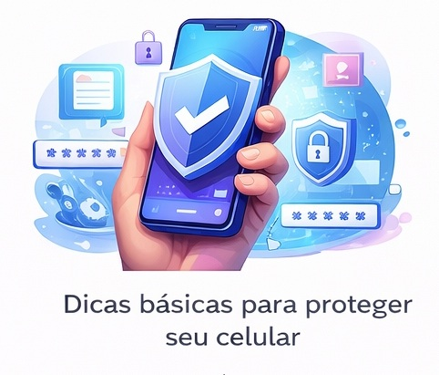

🔒 Dicas básicas para proteger seu celular

O celular armazena muitas informações pessoais, como fotos, mensagens e dados bancários. Por isso, adotar cuidados básicos de segurança é fundamental para evitar problemas.
Uma das principais dicas é utilizar senha, PIN ou biometria para bloquear o aparelho. Isso impede o acesso de pessoas não autorizadas caso o celular seja perdido ou roubado.
Instalar aplicativos apenas de lojas oficiais é outro cuidado importante. Aplicativos de fontes desconhecidas podem conter vírus ou programas maliciosos que comprometem a segurança do dispositivo.
Manter o sistema operacional sempre atualizado também ajuda a corrigir falhas de segurança. As atualizações costumam trazer melhorias importantes para a proteção dos dados.
Com essas dicas simples, é possível aumentar significativamente a segurança do celular e proteger melhor as informações pessoais.
E tem mais!
Celular Seguro BR. Aplicativo que permite aos cidadãos comunicar de forma eficiente e ágil as ocorrências de roubos e furtos de celulares, contribuindo para a redução desses crimes no Brasil e aprimorando a segurança da população.